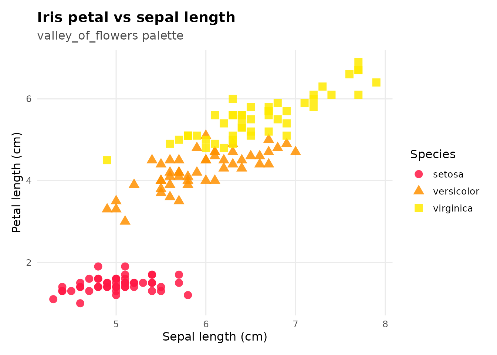
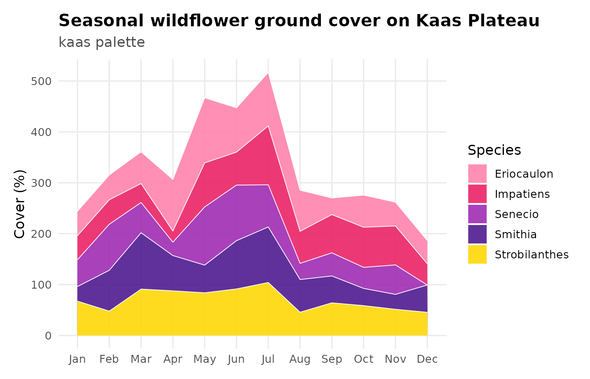
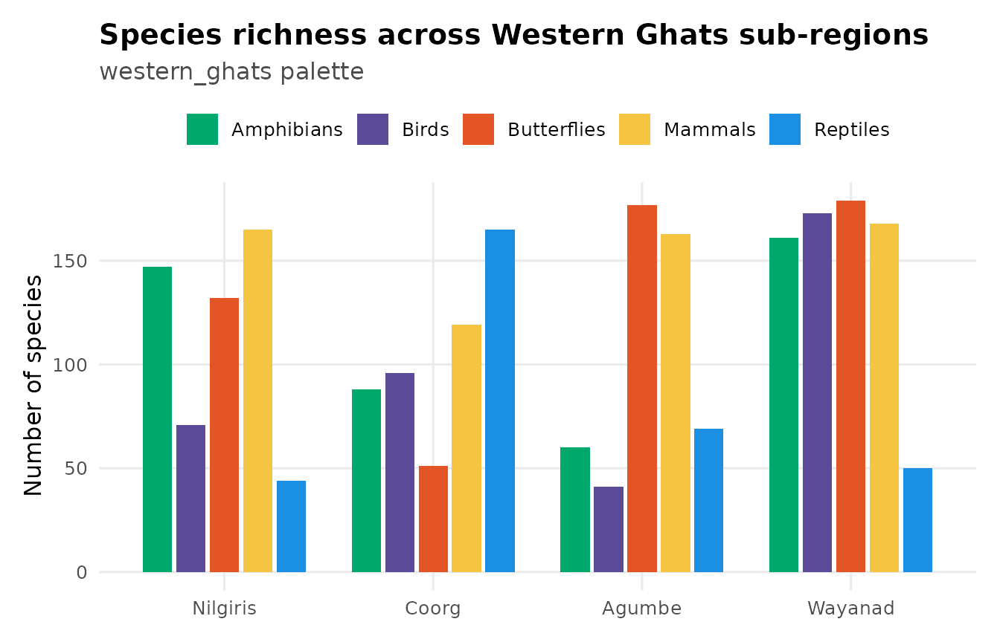
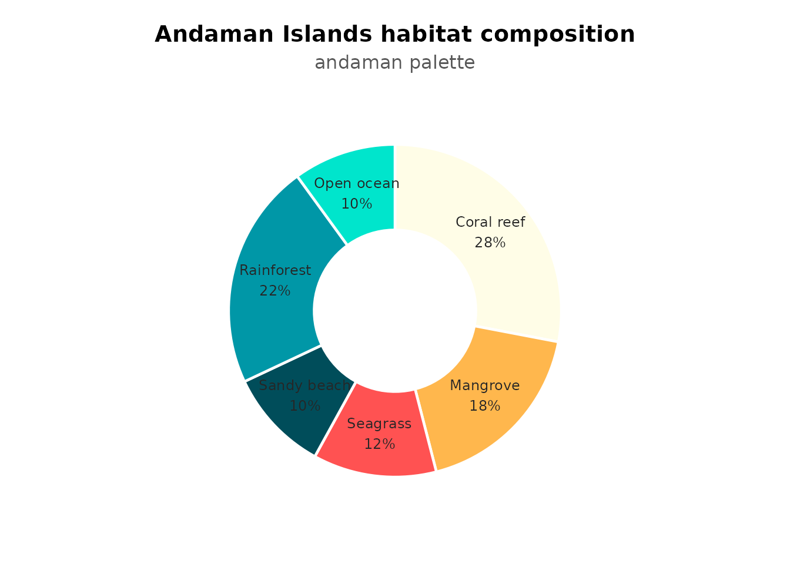
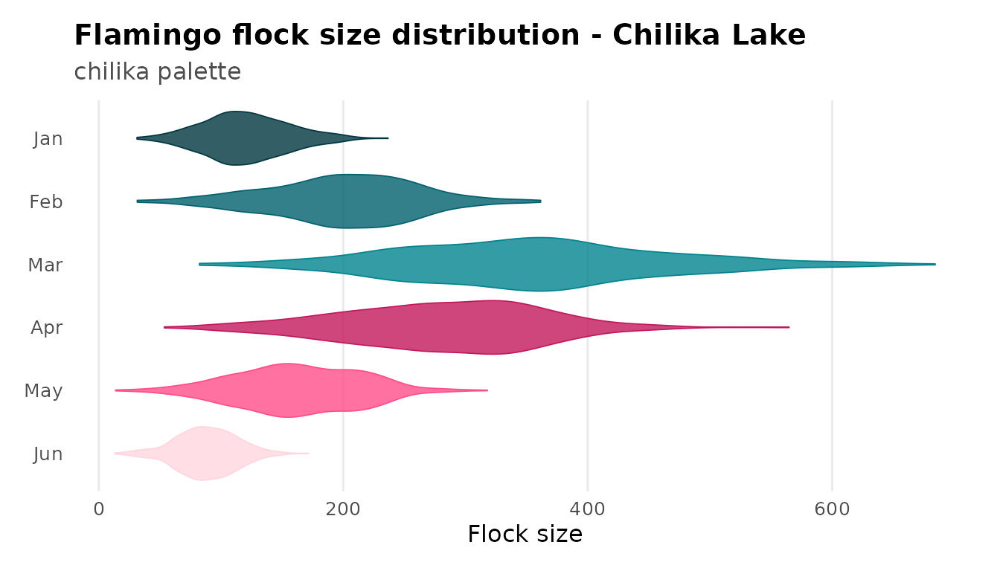
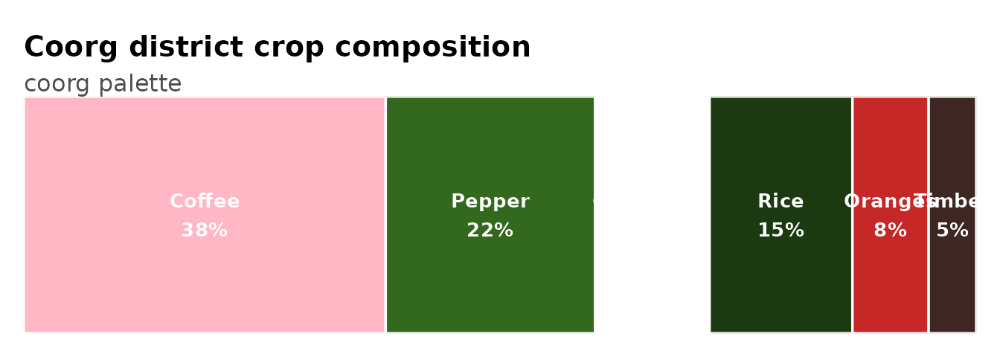
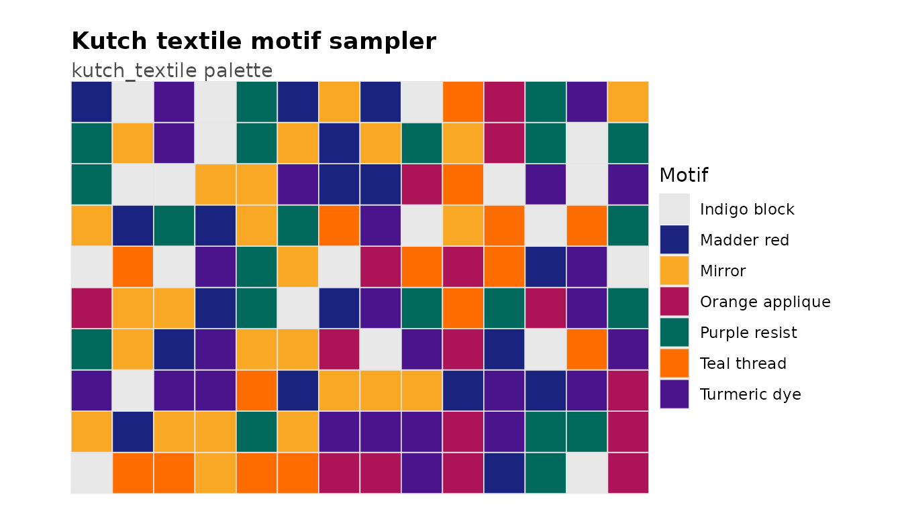
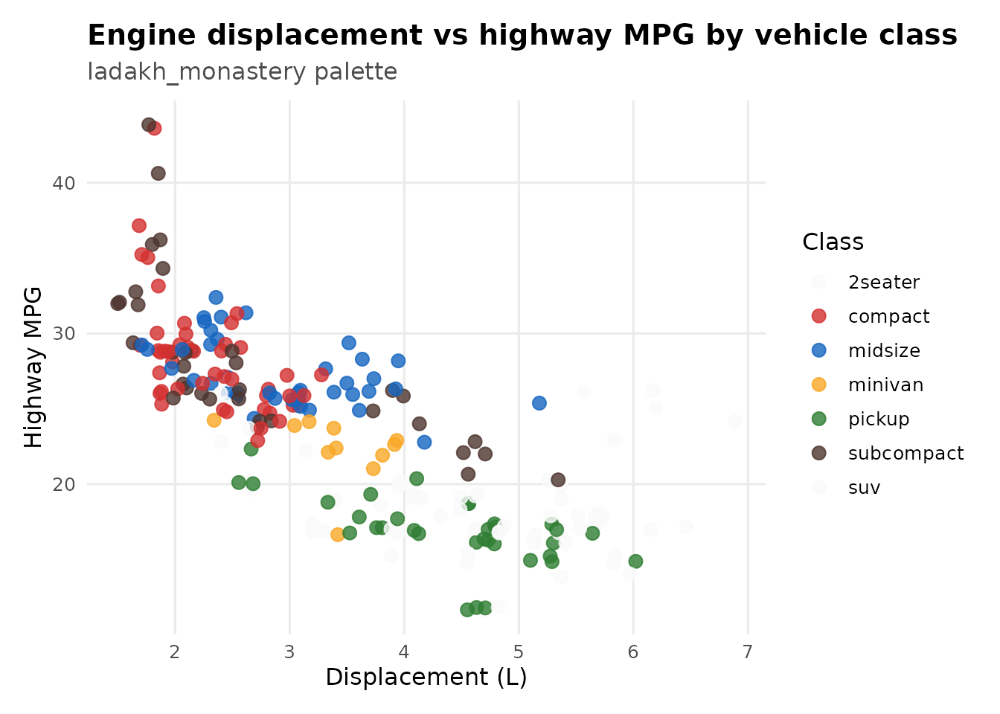
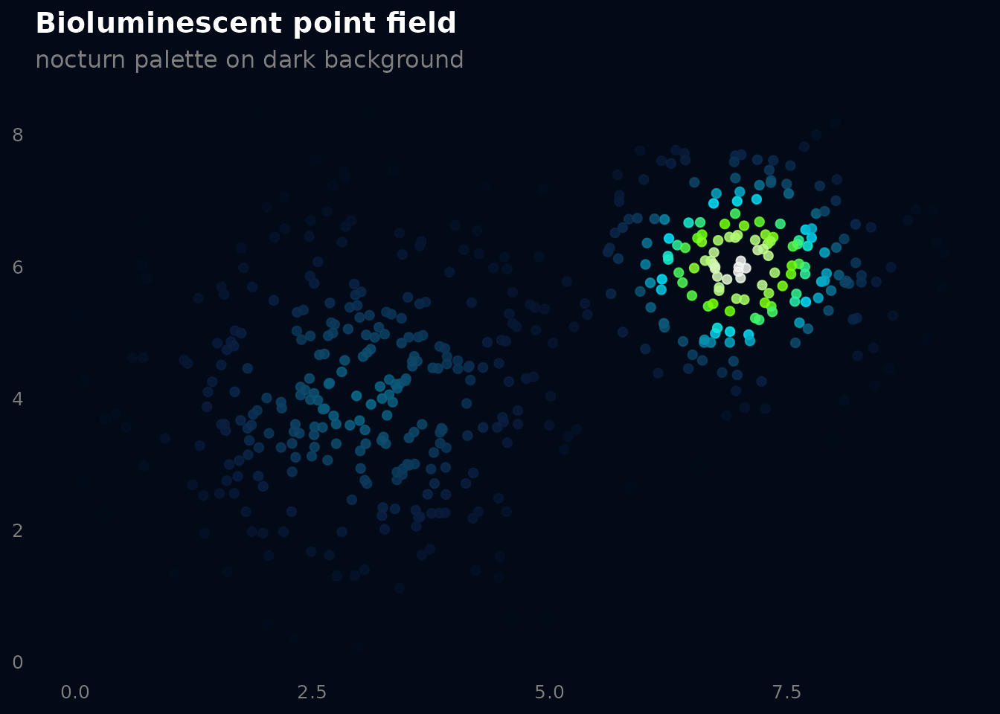
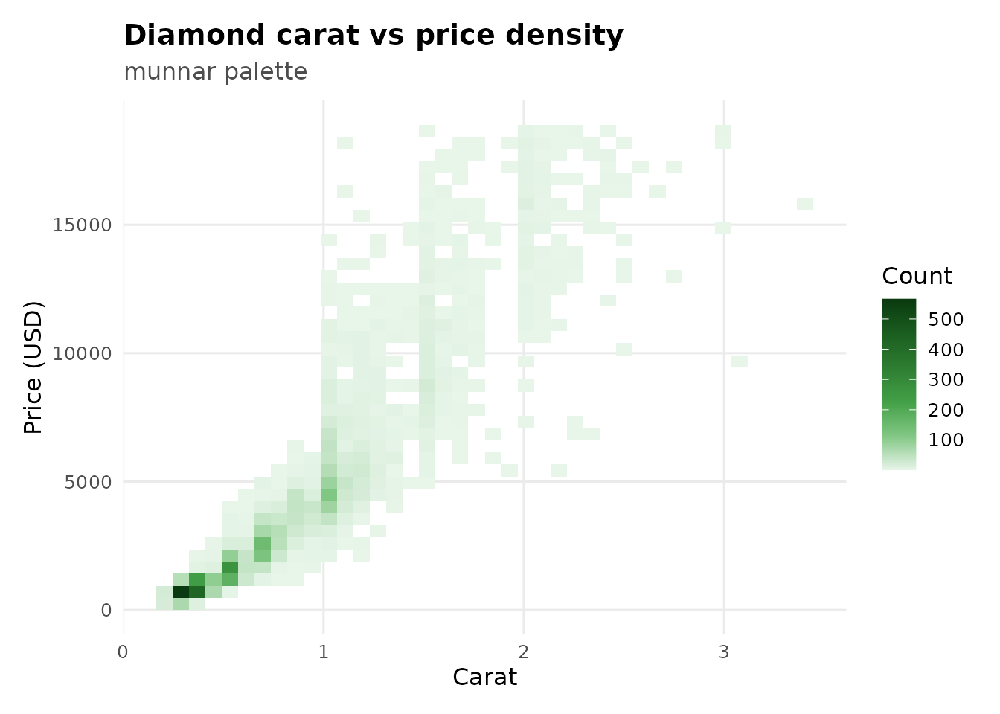

Qualitative palettes are for categorical data where no category is “higher” or “lower” than another. The colors need to be distinct, not ordered. This article shows common plot types where qualitative palettes shine.
Scatter plot - valley_of_flowers
The most basic use. Three species, three vivid colors that don’t suggest any ordering.
ggplot(iris, aes(Sepal.Length, Petal.Length,
color = Species, shape = Species)) +
geom_point(size = 3.5, alpha = 0.85) +
scale_color_prakriti("valley_of_flowers") +
labs(
title = "Iris petal vs sepal length",
subtitle = "valley_of_flowers palette",
x = "Sepal length (cm)", y = "Petal length (cm)"
) +
theme_prak()
Stacked area chart - kaas
Five wildflower species tracked across months. kaas has
7 colors, so 5 categories sit comfortably without recycling.
set.seed(42)
months <- rep(month.abb, each = 5)
species <- rep(c("Strobilanthes", "Smithia", "Impatiens",
"Senecio", "Eriocaulon"), 12)
area_df <- data.frame(
month = factor(months, levels = month.abb),
species = species,
cover = pmax(0, rnorm(60, 40, 20) +
rep(c(0, 10, 25, 35, 50, 60, 55, 40, 20, 10, 5, 0),
each = 5))
)
ggplot(area_df, aes(month, cover, fill = species, group = species)) +
geom_area(alpha = 0.88, color = "white", linewidth = 0.3) +
scale_fill_prakriti("kaas") +
labs(
title = "Seasonal wildflower ground cover on Kaas Plateau",
subtitle = "kaas palette",
x = NULL, y = "Cover (%)", fill = "Species"
) +
theme_prak()
Grouped bar chart - western_ghats
Comparing species richness across regions. western_ghats
gives each taxonomic group a distinct color that reads well side by
side.
set.seed(7)
bio_df <- data.frame(
region = rep(c("Nilgiris", "Coorg", "Agumbe", "Wayanad"), each = 5),
taxon = rep(c("Birds", "Butterflies", "Reptiles",
"Amphibians", "Mammals"), 4),
richness = sample(30:180, 20, replace = TRUE)
)
bio_df$region <- factor(bio_df$region,
levels = c("Nilgiris", "Coorg", "Agumbe", "Wayanad"))
ggplot(bio_df, aes(region, richness, fill = taxon)) +
geom_col(position = position_dodge(width = 0.8), width = 0.7) +
scale_fill_prakriti("western_ghats") +
labs(
title = "Species richness across Western Ghats sub-regions",
subtitle = "western_ghats palette",
x = NULL, y = "Number of species", fill = NULL
) +
theme_prak() +
theme(legend.position = "top")
Donut chart - andaman
Proportional habitat composition. andaman pairs
turquoise ocean tones with a coral-red accent that makes the donut
segments pop.
pie_df <- data.frame(
habitat = c("Coral reef", "Mangrove", "Seagrass",
"Sandy beach", "Rainforest", "Open ocean"),
pct = c(28, 18, 12, 10, 22, 10)
)
pie_df$ymax <- cumsum(pie_df$pct)
pie_df$ymin <- c(0, head(pie_df$ymax, -1))
pie_df$mid <- (pie_df$ymin + pie_df$ymax) / 2
pie_df$label <- paste0(pie_df$habitat, "\n", pie_df$pct, "%")
ggplot(pie_df, aes(ymax = ymax, ymin = ymin, xmax = 4, xmin = 2.2,
fill = habitat)) +
geom_rect(color = "white", linewidth = 0.8) +
geom_text(aes(x = 3.1, y = mid, label = label),
size = 3.2, color = "grey15") +
scale_fill_prakriti("andaman") +
coord_polar(theta = "y") +
xlim(c(0.5, 4.5)) +
labs(
title = "Andaman Islands habitat composition",
subtitle = "andaman palette"
) +
theme_void(base_size = 12) +
theme(
plot.title = element_text(face = "bold", hjust = 0.5),
plot.subtitle = element_text(hjust = 0.5, color = "grey35"),
legend.position = "none",
plot.margin = margin(10, 10, 10, 10)
)
Violin ridgeline - chilika
Simulated flamingo flock sizes across months. Using
scale_fill_manual() with colors pulled from
prakriti_palette() gives you full control when you need the
fill and color aesthetics to match.
set.seed(123)
ridge_df <- do.call(rbind, lapply(1:6, function(m) {
n <- 400
base_mu <- c(120, 200, 350, 280, 160, 90)[m]
data.frame(
month = factor(month.abb[m], levels = rev(month.abb[1:6])),
flock = pmax(0, rnorm(n, base_mu, base_mu * 0.3))
)
}))
cols_chilika <- prakriti_palette("chilika")
ggplot(ridge_df, aes(flock, month, fill = month, color = month)) +
geom_violin(scale = "width", width = 0.85, alpha = 0.8,
trim = TRUE, linewidth = 0.3) +
scale_fill_manual(values = cols_chilika) +
scale_color_manual(values = cols_chilika) +
labs(
title = "Flamingo flock size distribution - Chilika Lake",
subtitle = "chilika palette",
x = "Flock size", y = NULL
) +
theme_prak() +
theme(legend.position = "none",
panel.grid.major.y = element_blank())
Proportion bar - coorg
Horizontal stacked proportions for crop composition. Works well with
geom_rect() when you want labeled segments.
crops <- data.frame(
crop = c("Coffee", "Pepper", "Cardamom", "Rice", "Oranges", "Timber"),
area = c(38, 22, 12, 15, 8, 5)
)
crops$xmax <- cumsum(crops$area)
crops$xmin <- c(0, head(crops$xmax, -1))
crops$mid <- (crops$xmin + crops$xmax) / 2
ggplot(crops, aes(xmin = xmin, xmax = xmax, ymin = 0, ymax = 1,
fill = crop)) +
geom_rect(color = "white", linewidth = 0.6) +
geom_text(aes(x = mid, y = 0.5,
label = paste0(crop, "\n", area, "%")),
color = "white", fontface = "bold", size = 3.5) +
scale_fill_prakriti("coorg") +
coord_cartesian(expand = FALSE) +
labs(
title = "Coorg district crop composition",
subtitle = "coorg palette"
) +
theme_void(base_size = 12) +
theme(
plot.title = element_text(face = "bold"),
plot.subtitle = element_text(color = "grey30"),
legend.position = "none",
plot.margin = margin(12, 12, 12, 12)
)
Tile grid - kutch_textile
A 7-color showcase. kutch_textile has enough distinct
colors for complex categorical data.
set.seed(77)
kutch_df <- data.frame(
x = rep(1:14, 10),
y = rep(1:10, each = 14),
motif = sample(c("Mirror", "Indigo block", "Turmeric dye",
"Madder red", "Teal thread", "Orange applique",
"Purple resist"), 140, replace = TRUE)
)
ggplot(kutch_df, aes(x, y, fill = motif)) +
geom_tile(color = "grey90", linewidth = 0.3) +
scale_fill_prakriti("kutch_textile") +
coord_equal(expand = FALSE) +
labs(
title = "Kutch textile motif sampler",
subtitle = "kutch_textile palette",
fill = "Motif"
) +
theme_void(base_size = 11) +
theme(
plot.title = element_text(face = "bold"),
plot.subtitle = element_text(color = "grey30"),
plot.margin = margin(12, 12, 12, 12)
)
Jittered scatter with many groups - ladakh_monastery
6 vehicle classes, each getting a prayer-flag primary.
ladakh_monastery keeps groups separable even when points
overlap.
ggplot(mpg, aes(displ, hwy, color = class)) +
geom_jitter(size = 2.8, alpha = 0.8, width = 0.15) +
scale_color_prakriti("ladakh_monastery") +
labs(
title = "Engine displacement vs highway MPG by vehicle class",
subtitle = "ladakh_monastery palette",
x = "Displacement (L)", y = "Highway MPG", color = "Class"
) +
theme_prak()
#> Warning: Requested 7 colors but 'ladakh_monastery' only has 6; recycling. Use
#> type = "continuous" for smooth interpolation.
Dark-mode scatter - nocturn
nocturn starts from near-black, so it pairs naturally
with a dark background. Good for presentations or dashboards with dark
themes.
set.seed(23)
bio_pts <- data.frame(
x = c(rnorm(300, 3, 1.2), rnorm(200, 7, 0.8)),
y = c(rnorm(300, 4, 1.5), rnorm(200, 6, 1.0))
)
bio_pts$intensity <- with(bio_pts,
dnorm(x, 3, 1.2) * dnorm(y, 4, 1.5) +
dnorm(x, 7, 0.8) * dnorm(y, 6, 1.0)
)
ggplot(bio_pts, aes(x, y, color = intensity)) +
geom_point(size = 1.8, alpha = 0.85) +
scale_color_prakriti("nocturn", discrete = FALSE) +
labs(
title = "Bioluminescent point field",
subtitle = "nocturn palette on dark background",
x = NULL, y = NULL
) +
theme_minimal(base_size = 12) +
theme(
plot.background = element_rect(fill = "#020A18", color = NA),
panel.background = element_rect(fill = "#020A18", color = NA),
panel.grid = element_blank(),
text = element_text(color = "grey80"),
plot.title = element_text(face = "bold", color = "white"),
plot.subtitle = element_text(color = "grey50"),
axis.text = element_text(color = "grey50"),
legend.position = "none"
)
Hex bin density - munnar
munnar is pure green - bright tea-flush to deep shade.
Pairs well with geom_hex() for bivariate density.
set.seed(42)
ggplot(diamonds[sample(nrow(diamonds), 5000), ],
aes(carat, price)) +
geom_bin2d(bins = 40) +
scale_fill_prakriti("munnar", discrete = FALSE) +
labs(
title = "Diamond carat vs price density",
subtitle = "munnar palette",
x = "Carat", y = "Price (USD)", fill = "Count"
) +
theme_prak()